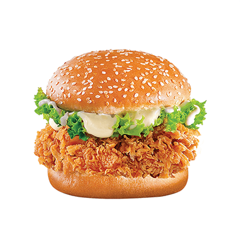

Burger

Description
The Zinger Burger is a popular fast-food item known for its crispy, spicy fried chicken fillet, typically served in a soft burger bun with fresh lettuce, mayonnaise, and sometimes cheese. To make a homemade Zinger Burger, start by marinating boneless chicken fillets in a mixture of buttermilk, hot sauce, garlic powder, paprika, salt, and pepper for at least a few hours, or overnight for the best flavor. This ensures the chicken stays juicy and absorbs the spices thoroughly. Once marinated, coat the chicken in a seasoned flour mixture that includes all-purpose flour, cornflour, paprika, black pepper, and salt. The key to the Zinger's crispiness is double-dipping: after coating the chicken in the flour mixture, dip it back into the marinade and coat it again in flour.
Heat oil in a deep fryer or pan and fry the chicken fillets until golden brown and crispy on the outside, and fully cooked inside. To assemble the Zinger Burger, lightly toast the burger buns and spread a layer of mayonnaise on both sides. Place the crispy chicken fillet on the bottom bun, top it with fresh lettuce, and add a slice of cheese if desired. Finish with the top bun, and your Zinger Burger is ready to serve. Pair it with fries and a cold drink for the ultimate fast-food experience at home!
Ingredients
- 4 boneless chicken fillets
- 1 cup buttermilk
- 2 tablespoons hot sauce
- 1 teaspoon garlic powder
- 1 teaspoon paprika
- Salt (to taste)
- Black pepper (to taste)
- 1 cup all-purpose flour
- 1/2 cup cornflour (cornstarch)
- 1 teaspoon paprika (for coating)
- Vegetable oil (for frying)
- 4 burger buns
- Mayonnaise
- Fresh lettuce leaves
- Cheese slices (optional)
Steps
- In a bowl, marinate the chicken fillets with buttermilk, hot sauce, garlic powder, paprika, salt, and black pepper. Cover and refrigerate for at least 2 hours, or preferably overnight.
- In a separate bowl, mix all-purpose flour, cornflour, paprika, salt, and black pepper to create the coating mixture.
- Remove the marinated chicken from the refrigerator. Coat each fillet in the seasoned flour mixture, pressing down to ensure the coating sticks.
- For extra crispiness, dip the coated chicken fillet back into the marinade and then coat it again in the flour mixture.
- Heat vegetable oil in a deep fryer or large pan to around 350°F (175°C). Fry the coated chicken fillets until they are golden brown and crispy on the outside, and cooked through (about 5-7 minutes per side).
- Once fried, remove the chicken from the oil and let it drain on paper towels to remove excess oil.
- Lightly toast the burger buns in a pan or toaster.
- Spread mayonnaise on both halves of the buns. Place a crispy chicken fillet on the bottom half, add fresh lettuce leaves, and a slice of cheese if desired.
- Place the top half of the bun on the assembled burger, and your homemade Zinger Burger is ready to serve!
- Enjoy your Zinger Burger with fries and your favorite drink.